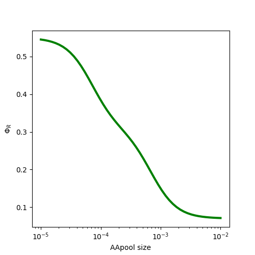
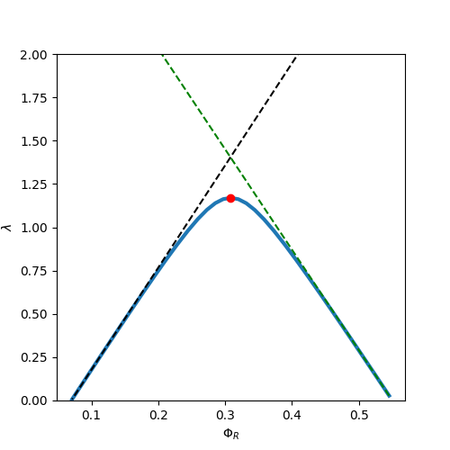
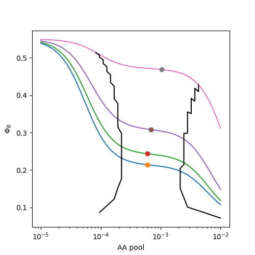

Table of Contents
Exported on Mon Jul 19 09:29:49 EDT 2021
1 Exploring growth models from Scott and Hwa with respect to proteome partitioning
CUSTOM_ID: exploring-growth-models-from-scott-and-hwa-with-respect-to-proteome-partitioning
import matplotlib.pyplot as plt import numpy as np plt.rcParams['figure.figsize']=5,5
1.1 Empirical obervations
CUSTOM_ID: empirical-obervations
Positive correlation between RNA/Protein ratio and growth rate with increasing nutrient quality, conditioned on translation efficiency \[\gamma\]
\[r=r_0+\frac{\lambda}{\gamma}\]
Negative correlation between RNA/Potein ratio and growth rate with increasing translation inhibition, conditioned on nutrient capacity \[\nu\]
\[r=r_{max}-\frac{\lambda}{\nu}\]
Making the transformation to the ribosome associated fraction of the proteome as follows: \(\Phi_R=\rho r\), we can rewrite the above empirical observations as follows
\[\Phi_R=\Phi_R^0 + \frac{\lambda}{\gamma}\]
and
\[\Phi_R=\Phi_R^{max}-\frac{\lambda}{\nu}\]
For bacteria, the empirical correlations show \(\Phi_R^0=0.07, \Phi_R^{max}=0.55,\gamma_0=5.9, \nu_0=2.5\), where \(\gamma_0,\nu_0\) are the maximal translational and nutritional capacities.
gamma0=5.9 nu0=5.8 phiRmax=0.55 phiR0=0.07
The steady state amino acid pool astar concentration will be varied
over three orders of magnitude.
astar=np.logspace(-5,-2)
These parameters are assumed to have a sigmoidal dependence on nutrient quality, or more specifically on the steady state amino acid pool sizes as follows:
\(\gamma=\gamma_0\frac{(a^*/K_t)^2}{1+(a^*/K_t)^2}\) where \(K_t\) is assigned the value \(10^{-4}\)
Kt=1e-4 gamma=gamma0*((astar/Kt)**2)/(1+(astar/Kt)**2)
\[\nu=\nu_0\frac{1}{1+(a^*/K_n)^2}\] and \(K_n\) is assumed to be 5\(K_t\)
Kn=5e-4 nu=nu0*(1/(1+(astar/Kn)**2))
The integrated dependence of the ribosome associated fraction of the proteome can be expressed as
\[\Phi_R=(\Phi_R^{max}-\Phi_R^0)\frac{\nu}{\gamma+\nu} + \Phi_R^0\]
phiR=(phiRmax-phiR0)*(nu/(nu+gamma))+phiR0
Since both \(\nu\) and \(\gamma\) are dependent on the steady state amino acid pool, we can study how \(\Phi_R\) varies wih amino acid input.
plt.plot(astar,phiR,'g',lw=3) plt.xscale('log') plt.xlabel('AApool size') plt.ylabel('$\Phi_R$') plt.savefig("./img/sh14-1.png")

and that for growth rate is expressed as
\[\lambda = (\Phi_R^{max}-\Phi_R^0)\frac{\gamma \nu}{\gamma+\nu}\]
growth_rate=(phiRmax-phiR0)*(nu*gamma/(nu+gamma))
We can now plot the trends to study the variation of growth rate with ribosomal fraction across the entire range of amino acid concentrations
plt.close() max_gr=max(growth_rate) i=0 while growth_rate[i]!=max_gr: i=i+1 plt.plot(phiR,growth_rate,lw=3) plt.plot(phiR,gamma0*(phiR-phiR0),'k--') plt.plot(phiR,nu0*(phiRmax-phiR),'g--') plt.plot(phiR[i],max_gr,'ro') plt.ylim([0,2.0]) plt.xlabel('$\Phi_R$') plt.ylabel('$\lambda$') plt.savefig("./img/sh14-2.png")

plt.close() def RibFracGen(nu0): astar=np.logspace(-5,-2) Kt=1e-4 gamma0=5.9 gamma=gamma0*((astar/Kt)**2)/(1+(astar/Kt)**2) Kn=50e-4 # 50 times Kt nu=nu0*(1/(1+(astar/Kn)**2)) phiRmax=0.55 phiR0=0.07 phiR=(phiRmax-phiR0)*(nu/(nu+gamma))+phiR0 growth_rate=(phiRmax-phiR0)*(nu*gamma/(nu+gamma)) max_gr=max(growth_rate) i=0 while growth_rate[i]!=max_gr: i=i+1 max_astar=astar[i] max_phiR=phiR[i] return (astar,phiR,max_astar,max_phiR) nuvals=[2.5,3.3,5.8,30.0] for n in nuvals: A,R,mA,mR=RibFracGen(n) plt.plot(A,R) plt.plot(mA,mR,'o') nuvals=np.linspace(0.1,30.0,70) Al=[] Rl=[] Au=[] Ru=[] for n in nuvals: A,R,mA,mR=RibFracGen(n) i=0 At=[] Rt=[] for i in range(0,len(R)): if R[i]>0.9*mR and R[i]<1.1*mR: At.append(A[i]) Rt.append(R[i]) Al.append(min(At)) Rl.append(max(Rt)) Au.append(max(At)) Ru.append(min(Rt)) plt.plot(Al,Rl,'k') plt.plot(Au,Ru,'k') plt.xlabel('AA pool') plt.ylabel('$\Phi_R$') plt.xscale('log') plt.savefig("./img/sh14-3.png") plt.close()

Note that to produce the above plot, the value of Kn is 50 times Kt. This results in a flatter plateau. Can't seem to reproduce the grey region depcited in Fig 3C